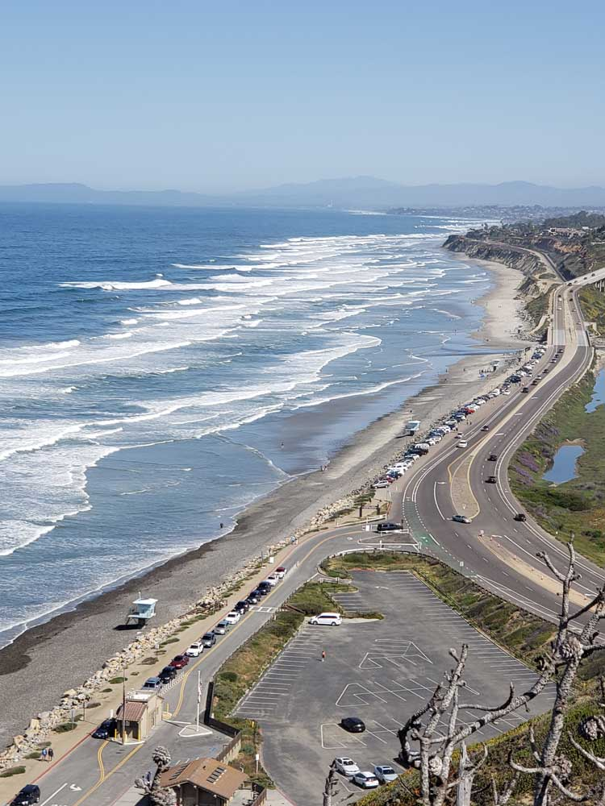
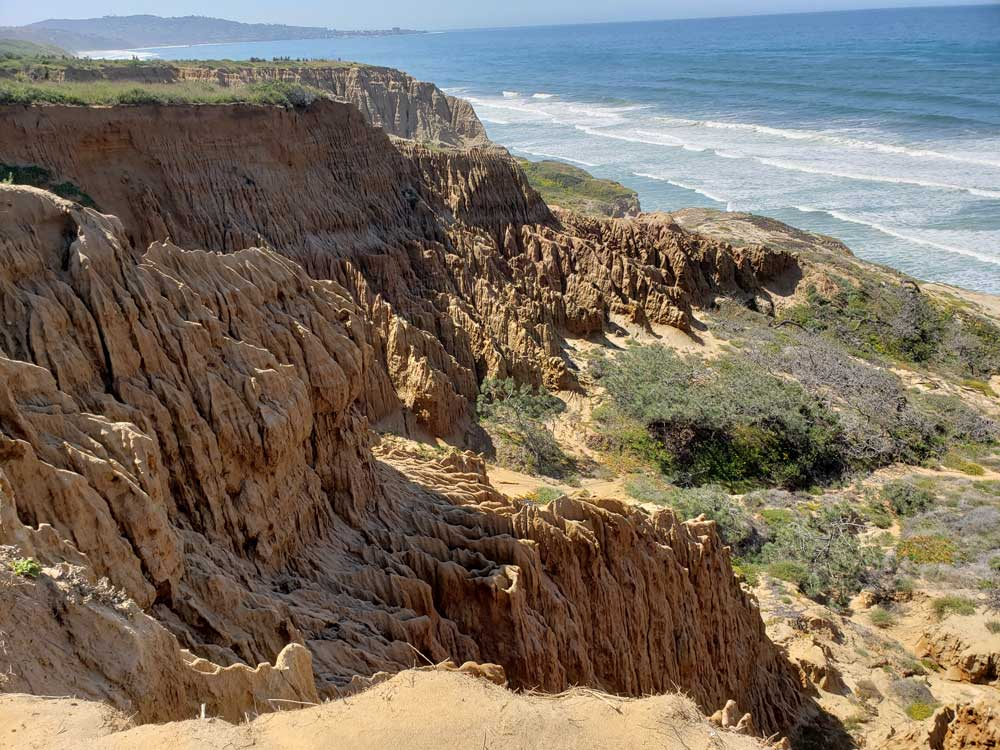
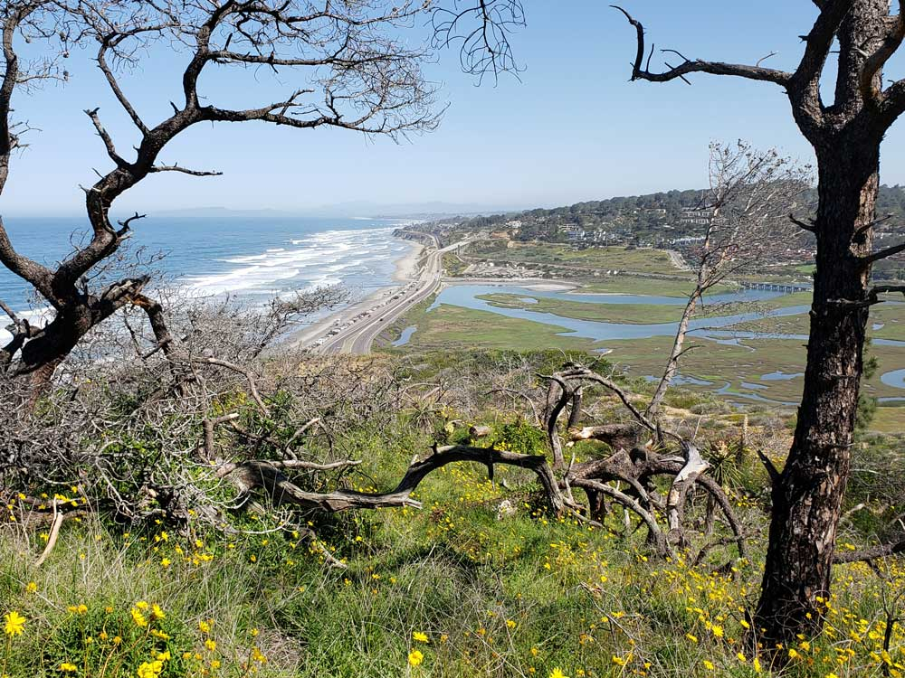
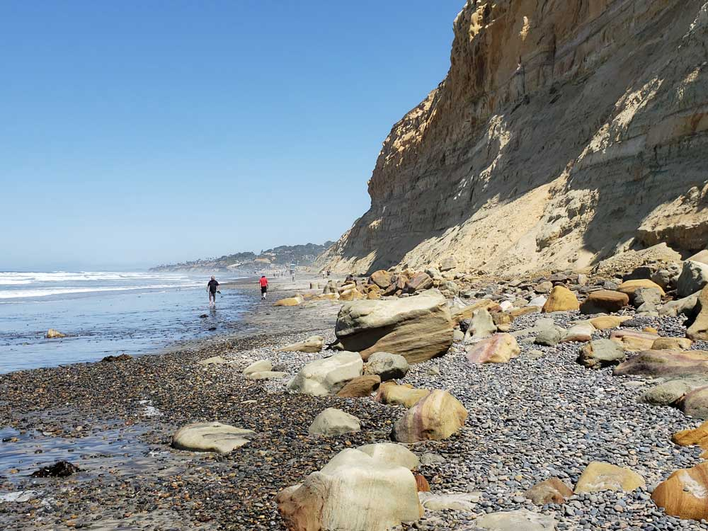
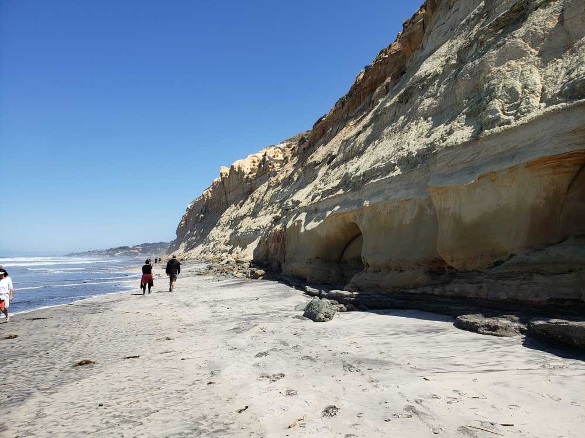
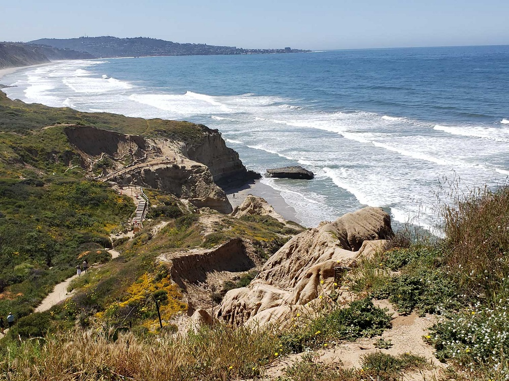

Natural Reserve including 2,000 acres of coastal state park located in the community of La Jolla, and remains one of the wildest stretches of land (8 km²) on the Southern California coast
General Admission Day Use fee is $12-$25 per vehicle (demand based pricing)
North Beach Parking:
General Admission Day Use fee is $10-$25 per vehicle (demand based pricing)
How to Get There
Head west on Broadway toward Third Ave. Turn right onto 1st Ave. Use the left 2 lanes to turn left to merge onto I-5 N toward Los Angeles. Take exit 29 for Genesee Ave. Use the left 2 lanes to turn left onto Genesee Ave. Continue onto N Torrey Pines Rd.
Overview
Torrey Pines State Natural Reserve is 2,000 acres of coastal bluffs, canyons and beach in La Jolla, one of the wildest stretches of coast in Southern California, and the home of the rare Torrey pine, found naturally only here and on Santa Rosa Island. A National Natural Landmark since 1977, it has eight miles of trails to cliffside overlooks, a lagoon vital to migrating seabirds and a small museum at the top of the hill. Humpback and gray whales can sometimes be seen from the cliffs, and Black’s Beach lies at the southern end. The reserve borders the Torrey Pines Municipal Golf Course to the south and Del Mar to the north.
Things to Do
Visit One of California's Most Iconic Coastal Reserves
Torrey Pines State Natural Reserve protects one of the wildest stretches of coastline in Southern California and is renowned for its dramatic sandstone cliffs, ocean vistas, rare Torrey pine trees, and scenic hiking trails. Located between La Jolla and Del Mar, the reserve preserves one of the last remaining populations of the endangered Torrey pine, one of the rarest pine species in North America.
Explore the Rare Torrey Pine Forest
The reserve is home to the nation's rarest pine tree, the Torrey pine, which naturally grows in only two locations: along the coast of San Diego County and on Santa Rosa Island. Visitors can walk among these uniquely sculpted trees while learning about the area's ecology and conservation efforts.
Enjoy Spectacular Coastal Views
Torrey Pines offers some of the most breathtaking ocean views in Southern California. From the cliff-top overlooks, visitors can enjoy panoramic vistas of the Pacific Ocean, rugged sandstone formations, beaches, and migrating marine wildlife.
Relax at Torrey Pines State Beach
Located beneath the reserve's cliffs, Torrey Pines State Beach provides opportunities for beachcombing, photography, walking, and enjoying the coastal scenery. The beach is popular for its natural beauty and dramatic backdrop of towering sandstone bluffs.
Observe Wildlife and Seasonal Migrations
The reserve supports a variety of wildlife, including hawks, shorebirds, dolphins, and migratory whales. During winter and spring, visitors may spot gray whales traveling along the California coast, while the reserve's diverse habitats support numerous bird species throughout the year.
Visit the Torrey Pines Lodge and Visitor Center
The visitor center features exhibits about the reserve's geology, natural history, wildlife, and rare plant communities. Educational programs and interpretive displays provide insight into the area's unique ecosystems and conservation significance.
Top Trails
Guy Fleming Trail
Length: Approximately 0.7 miles loop
Elevation Gain: Minimal
Difficulty: Easy
This short scenic loop offers beautiful ocean overlooks, seasonal wildflowers, and excellent opportunities to view Torrey pines and coastal habitats. It is one of the reserve's most accessible and family-friendly trails.
Beach Trail
Length: Approximately 1.5 miles one way
Elevation Gain: Significant descent and ascent
Difficulty: Moderate
One of the reserve's most popular hikes, this trail descends from the mesa to Torrey Pines State Beach, offering spectacular views of sandstone cliffs, coastal formations, and the Pacific Ocean along the route.
Razor Point Trail
Length: Approximately 1.4 miles round trip
Elevation Gain: Minimal
Difficulty: Easy
This trail leads to a dramatic overlook above the ocean, providing panoramic coastal views, opportunities for photography, and one of the best vantage points in the reserve.
Broken Hill Trail
Length: Approximately 2.5 miles round trip
Elevation Gain: Moderate
Difficulty: Moderate
The longest trail in the reserve, Broken Hill Trail traverses coastal bluffs and unique geological formations before reaching secluded viewpoints overlooking the Pacific Ocean and the surrounding coastline.
Sources: California State Parks official Torrey Pines State Natural Reserve information, including details on Torrey pine forests, hiking trails, wildlife viewing, geology, visitor facilities, and recreational opportunities.
https://www.parks.ca.gov/?page_id=657https://www.parks.ca.gov/?page_id=657
Additional information verified through the Torrey Pines Conservancy and reserve visitor resources covering the Guy Fleming Trail, Razor Point Trail, Beach Trail, Broken Hill Trail, rare Torrey pine habitats, and conservation programs.
https://torreypines.org/https://torreypines.org/
Torrey Pine
The Pinus torreyana torreyana, also known as the Torrey pine, is the rarest pine in North America. The plant has vanished over time due to the drying period over the last 10 years and has an intricate root system that helps attach it to the overbearing bluffs. Torrey Pines is the sole location worldwide where this subspecies grows (including a small coastal strip immediately north of the Reserve in Del Mar.
Other species, climate
While chiefly known as habitat to this extremely rare and endangered species, the Torrey Pine Reserve also is home to a wide variety of vegetation and wildlife. The Torrey Pines Reserve has a rather unusual climate due to the Santa Ana winds causing the vegetation to be drier. Plants such as Coastal sage scrub, Coastal Strand, and Salt marsh also thrive at Torrey Pines.
Trails
The Torrey Pines State Natural Reserve offers 8 trails to hikers that vary in terms of length, difficulty, and scenery. San Diego Tourism Authority says that three popular trails at the park are Guy Fleming Trail, Razor Point Trail, and Beach Trail. The Guy Fleming Trail is 0.7 miles and is the easiest trail at the park. The trail provides diverse scenery from Peñasquitos Marsh to views of La Jolla and is well known for whale sightings in the winter. The Razor Point Trail is a 1.4-mile loop that provides hikers with a view of ravines and badlands while overlooking the ocean. The Beach Trail is a ¾ mile walk that leads one down to the Torrey Pines State Beach. Although it is the least scenic trail, it is very popular due to taking hikers straight to the wide-open beach. Other trails at the park are the Parry Grove Trail, Yucca Point Trail, High Point Trail, Broken Hill Trail, and Discovery Trail. The official Torrey Pines website provides more information on the other trails.
This article uses material from the Wikipedia article "Torrey Pines State Natural Reserve", which is released under the Creative Commons Attribution-Share-Alike License 3.0





